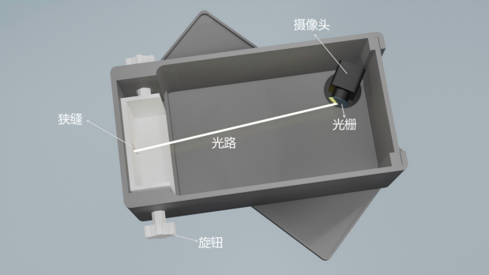
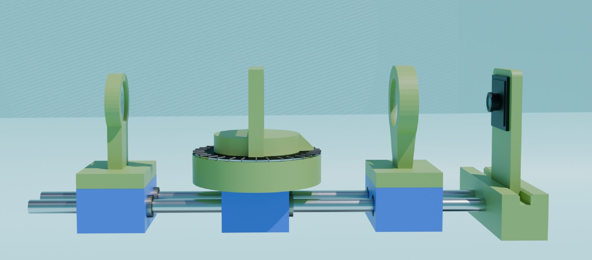
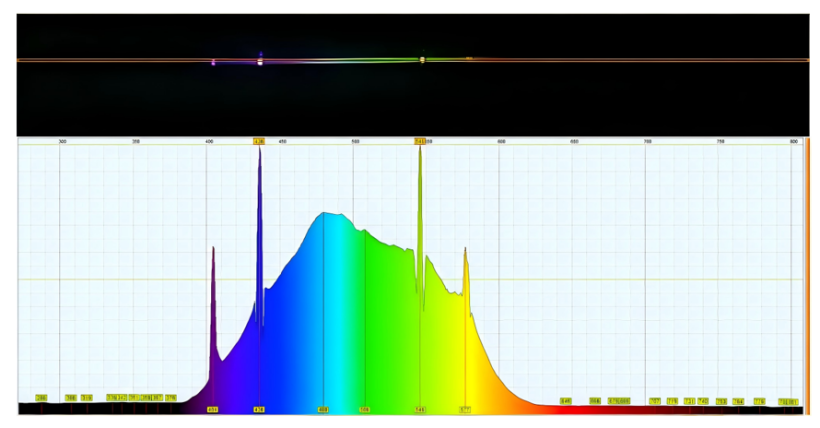
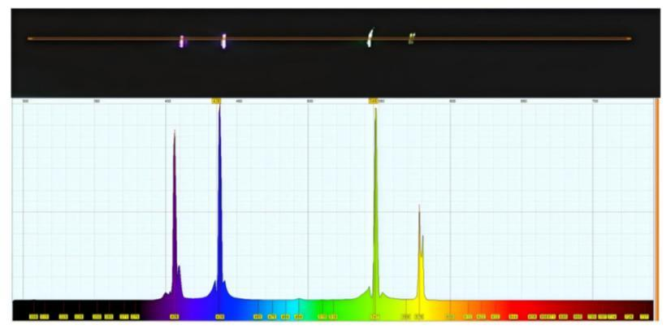
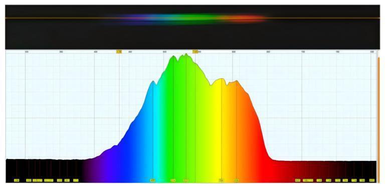

光栅结构
光栅由大量等宽、等间距的平行狭缝构成，核心参数光栅常数 d = a + b（缝宽 a + 不透光间距 b），常用光栅 d 约 10⁻⁴~10⁻⁶ m。
3 分钟带你读懂光栅衍射
视频采用「动画制作 + 实物实拍」结合方式，从空间站光谱仪切入，分层讲解光栅衍射原理，全程节奏紧凑，适配大学生碎片化自主学习。
光栅衍射的物理本质与关键规律
光栅由大量等宽、等间距的平行狭缝构成，核心参数光栅常数 d = a + b（缝宽 a + 不透光间距 b），常用光栅 d 约 10⁻⁴~10⁻⁶ m。
光栅衍射 = 多缝干涉 × 单缝衍射调制的复合结果：多缝干涉决定主极大（亮纹）的位置，单缝衍射决定各级亮纹的亮度上限。
零级亮纹不色散（各波长重合为白色）；同级次波长越长越靠外（紫→红）；小角度下各级等间距；可观测级次受 k ≤ d/λ 限制。
主极大光强 I ∝ N²，狭缝数越多亮纹越细锐；单缝衍射因子作为光强包络调制各级亮度，级次越高亮度越低。
当干涉主极大恰好落在单缝衍射暗纹处（d/a 为整数比时）该级消失；例如 d=3a 时 3、6、9… 级缺级，是高频考点。
除零级外按波长展开形成彩色光谱，是光栅分光镜的核心原理；广泛应用于光谱仪、光栅尺、防伪标识等场景。
分层递进 · 拖动滑块即可实时观察衍射现象
前沿导入 → 分层精讲 → 实操验证 → 科技升华
以天宫空间站光谱仪切入，追溯夫琅禾费创制衍射光栅的历史。
多缝干涉 → 单缝衍射 → 缺级与分光，逐层拆解核心机制。
自制简易光栅光谱仪，实测汞原子特征谱线，学以致用。
回归空间站，总结光栅分光在深空探测中的核心价值。
分光计测量光栅常数与光波波长 · 不确定度评定
测量衍射角的精密光学仪器，需完成望远镜、平行光管、载物台「三垂直」共轴调节。
核心衍射元件，光栅常数待测，刻线需与分光计转轴平行。
线状光源，紫光 435.8 nm、绿光 546.1 nm 特征谱线用于测量与验证。
调节望远镜聚焦无穷远、光轴垂直转轴，平行光管出射平行光且共轴。
使光栅平面垂直入射光、刻线与转轴平行，保证谱线左右对称、等高。
记录中央明纹位置，测量 ±1 级紫光、绿光谱线，双游标读数、重复 3 次。
由光栅方程求光栅常数 d 与绿光波长 λ，计算相对误差并评定不确定度。
核心思路：以已知波长「定标」→ 反推未知波长，两次代入同一光栅方程。
光栅平面未严格垂直入射光、刻线与转轴不平行、分光计未共轴、刻度盘偏心、谱线展宽。可通过自准直法精细调节、双游标取平均、汞灯预热等方法减小。
人眼判断谱线对齐的视差、游标估读误差、仪器轻微晃动、环境振动与杂散光。可通过消除视差、多次测量取平均、减震遮光等方法减小。
两代仪器迭代 · 从初代原型到同轴模块化光谱仪

初代原型 · 完成基础光谱采集，验证分光原理

双杆导轨 + 光栅旋转转台 · 元件可滑移调换
我们经历两代自制光谱仪迭代：V1.0 实现光谱原理初步验证；V2.0 升级为双杆导轨同轴模块化架构，增加光栅旋转转台，全部光学元件可滑移拆装，优化光路同轴、抑制杂散光，完成三类光源定量光谱测量，适配课堂探究实验。
为验证光栅分光原理、降低光谱仪搭建门槛，初代采用 3D 打印支架与 DVD-R 光盘数据层作为透射光栅，配合 USB 摄像头与开源软件完成基础光谱采集，实现「定性演示」目标。
教学意义：科研与教具开发并非一步到位——原型也能完成定性演示，但存在局限，正是这些局限催生了 V2.0 的迭代。
光源经狭缝限束后，由准直透镜 L₁ 变为平行光，垂直入射光栅旋转转台上的透射光栅；不同波长衍射角不同，经聚焦透镜 L₂ 汇聚至 USB 摄像头靶面，形成按波长展开的光谱。
沿双杆导轨滑移各元件座，使狭缝、透镜、光栅、摄像头中心等高
调节 L₁ 使出射平行光，调节 L₂ 使光谱清晰聚焦于靶面
以荧光灯 436 / 546 nm 双谱线定标，拟合像素—波长关系
切换光源，采集汞灯、太阳光光谱并比对标准谱线



| 软件测量值 (nm) | 标准波长 (nm) | 相对误差 (%) |
|---|---|---|
| 406 | 404.7 | 0.32 |
| 438 | 435.8 | 0.50 |
| 547 | 546.1 | 0.16 |
波长测量相对误差 0.16%~0.50%，分辨率约 6.6 nm。除黄色双谱线（577 / 579 nm）因间距小于分辨极限表现为单峰外，其余主要谱线均被正确识别，满足可见光光谱分析与教学演示需求。
| 项目 | V1.0 初代简易版 | V2.0 同轴模块化版 |
|---|---|---|
| 机械结构 | 简易 3D 打印支架 | 金属双杆导轨 + 可旋转光栅转台，元件可滑移调换 |
| 光路调节 | 调节难度大，同轴度较差 | 可等高同轴精细调节 |
| 杂散光水平 | 较高 | 显著抑制 |
| 可测光源 | 基础光源 | 荧光灯、汞灯、太阳光 |
| 波长相对误差 | 较大 | 0.16% ~ 0.50% |
| 分辨率 | 较差 | 约 6.6 nm |
在网站 3D 光栅衍射仿真中修改光栅常数 d、缝数 N，预测光谱图样与可见级次的变化。
观察 V2.0 实测汞灯光谱，将实测谱线位置与仿真输出结果对照，验证光栅方程。
为什么 577 / 579 nm 汞黄双线无法分开？结合狭缝宽度与分辨率限制，分析谱线展宽的来源。
有问题？在这里留言讨论